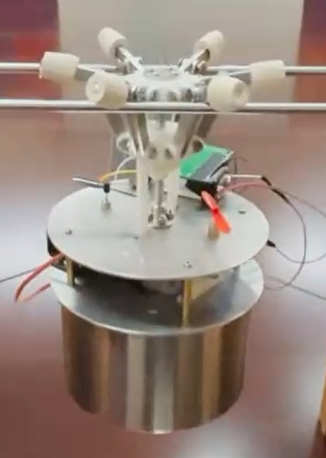
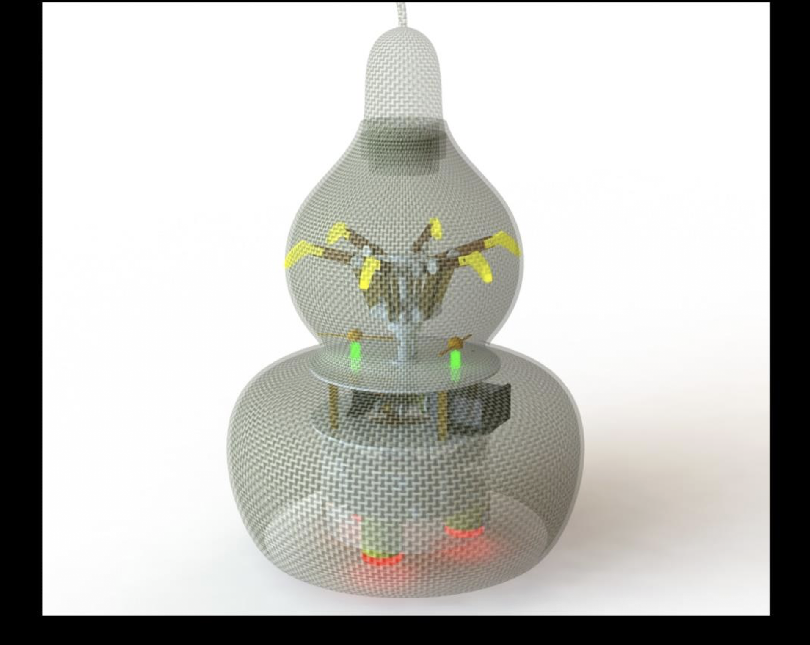
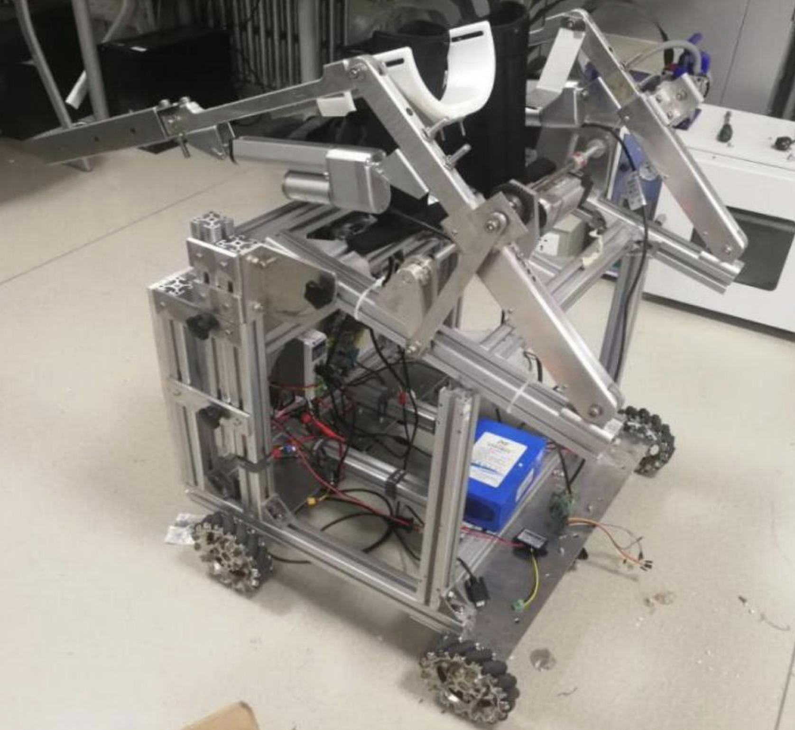
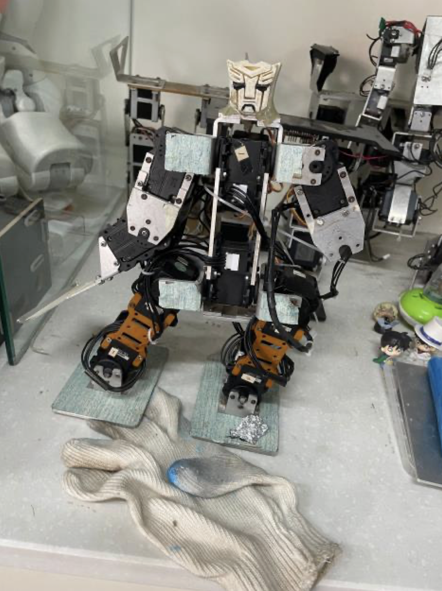
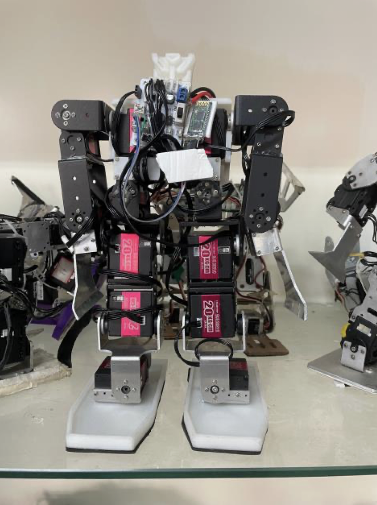
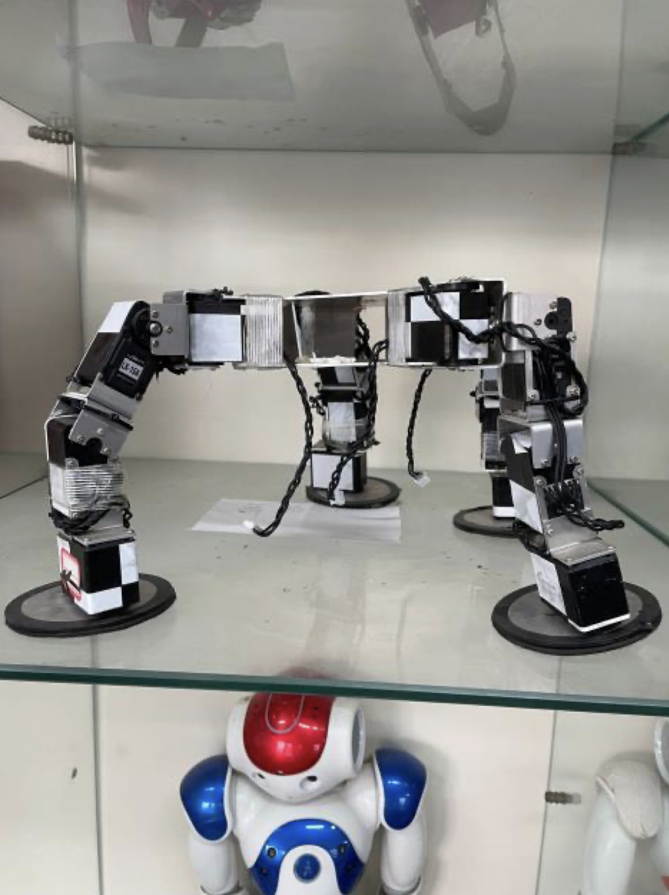
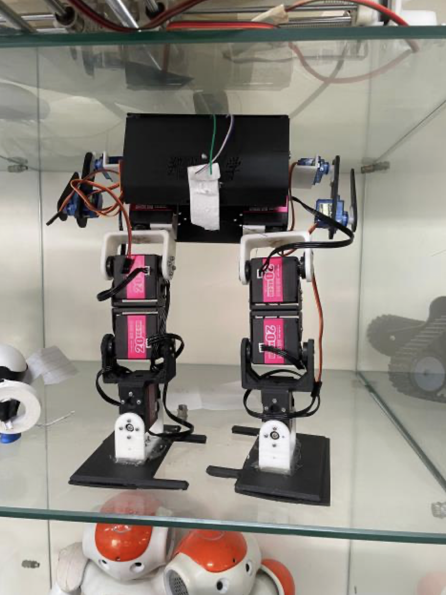

Wei Chen
Hi there!
I received both my Bachelor's degree in Mechanical Engineering (with a minor in Business
Administration)
and my Master's degree in Software Engineering from Zhengzhou University,
where I had the privilege of being supervised by Prof. Yafei Li.
During my undergraduate years,
I developed a strong interest in Computer Science,
which led me to change my academic path and pursue further studies in this field.
During my master’s studies, I focused on Crowdsourcing and Data Management,
independently developing ideas, coding, and publishing three papers,
as well as collaborating on two more.
My research interests include 🧠 reinforcement learning and its applications in 🤖 embodied intelligence, 👁️ computer vision, and 🗣️ large language models (LLMs).
I am currently seeking PhD and RA opportunities related to these fields.
Github
Google
Scholar
ischenwei[at]outlook[dot]com
[2025-xx] xxxxxxxxxxxxxxxxxxxxxxxxxxxxxxxxxxxxxxxxxxxx.
[2025-03] xxxxxxxxxxxxxxxxxxxxxxxxxxxxxxxxxxxxxxxxxxxxx
Gradient-Guided Credit Assignment and Joint Optimization for Dependency-Aware Spatial Crowdsourcing
Yafei Li*, Wei Chen*, Jinxing Yan, Huiling Li, Lei Gao, Mingliang Xu†
Association for the Advancement of Artificial Intelligence (AAAI)
2025
★ Oral Presentation (Score: 7 7 8) ★
TL;DR:
We propose RMO, a two-stage framework for dependency-aware spatial crowdsourcing that uses
multi-agent RL for subtask recommendation and utility-based matching, employing
meta-gradients and gradient synchronization to address credit assignment and joint
optimization challenges.
[View Paper]
[View Poster]
Credit Assignment and Fine-Tuning Enhanced Reinforcement Learning for Collaborative Spatial Crowdsourcing
Wei Chen, Yafei Li†, Baolong Mei, Guanglei Zhu, Jiaqi Wu, Mingliang Xu
International Joint Conference on Artificial Intelligence (IJCAI)
2025
TL;DR:
We propose CAFE, a multi-agent RL framework for spatial crowdsourcing that addresses delayed
rewards and non-stationary distributions through credit assignment mechanisms and adaptive
fine-tuning, achieving superior task completion and equitable reward distribution.
[View Paper]
[View Poster]
Effective Task Assignment in Mobility Prediction-Aware Spatial Crowdsourcing
Huiling Li, Yafei Li†, Wei Chen, Shuo He, Mingliang Xu, Jianliang Xu
IEEE International Conference on Data Engineering (ICDE) 2025
TL;DR:
We address Task Assignment in Mobility Prediction-aware Spatial Crowdsourcing (TAMP) through
a task-adaptive meta-learning algorithm that clusters workers and trains mobility prediction
models, coupled with a task assignment algorithm that prioritizes high-confidence
completions, achieving improved assignment quality.
[View Paper]
[View Poster]
Catcher: A Cache Analysis System for Top-k Pub/Sub Service
Baolong Mei, Yafei Li†, Wei Chen, Linshen Luan, Guanglei Zhu, Yuanyuan Jin, Jianliang Xu
Proceedings of the Very Large Data Base Endowment (PVLDB) 2024
TL;DR:
We introduce Catcher, a multi-functional cache analysis system for Top-k Publish/Subscribe
services that enable intuitive analysis of cache performance, bottleneck identification,
and real-time evaluation through user-friendly interfaces.
[View Paper]
[View Poster]
Collaborative decision making methods for support optimization of diverse carrier-borne aircraft
Wei Chen, Lulu Li, Dong Chen, Yafei Li†, Ke Wang, Yuanuyuan Jin, Mingliang Xu
Acta Aeronautica et Astronautica Sinica (in Chinese)
TL;DR:
We propose DATSDM, a novel Dependency-Aware Task Scheduling Decision Module leveraging graph neural networks and Transformer attention mechanisms
[View Paper]
I have experience in mechanical design, circuit design, and programming.
|


Medical Device Integrating Traditional Chinese Culture – Intelligent Gourd Moxibustion Therapy Instrument. |

Lower Limb Rehabilitation Robot – First Prize in Mechanical Design Competition. |
|

10-Servo Gymnastics Robot at |

14-Servo Gymnastics Robot at |

Dancing Robot at |

Racewalking Robot at |
Please click here to view the full CV (PDF format).